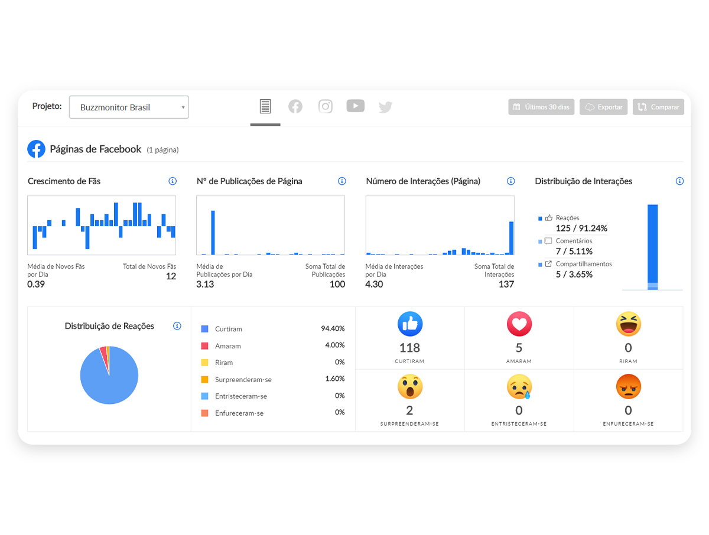

Hemos sido capaces de configurar proyectos de gran magnitud, desde locales hasta globales, obteniendo resultados e insights muy valiosos.
MRM // McCANNPablo Ferrer, Head of Social Media
Obtén análisis detallados de tu perfil y el de tus competidores, encuentra oportunidades y recibe insights automáticos con la plataforma de IA más avanzada del mercado.
Con la Inteligencia Artificial de Buzzmonitor tienes insights precisos en segundos, sin esfuerzo manual.

Súmate a los más de 1.000 clientes en Brasil, España, LATAM y Portugal que ya alcanzaron resultados increíbles con Buzzmonitor.
Completa tus datos y nuestro equipo te contactará.
Planes desde 390 USD /mes
Monitorea cualquier término en redes sociales: hashtags, marcas, competidores y eventos, con dashboards ilimitados y reportes en tiempo real.
Quiero agendar una demoAI Insights genera análisis resumidos de tus reportes de monitoreo: ahorras tiempo y recibes los principales hallazgos en segundos, listos para compartir con tu equipo.
Quiero agendar una demo
Las menciones en videos, stories, audios e imágenes se detectan, transcriben y analizan en tiempo real, con alertas automáticas sobre menciones negativas.
Quiero agendar una demo
La IA detecta picos de menciones, crea alertas de términos sensibles y ayuda a tu marca a actuar antes de que la crisis explote.
Quiero agendar una demo

Ten varias soluciones digitales en una única plataforma, líder en el uso de IA.

Lee lo que dicen quienes ya utilizan Buzzmonitor
Hemos sido capaces de configurar proyectos de gran magnitud, desde locales hasta globales, obteniendo resultados e insights muy valiosos.
Es muy completa, tanto para el área de análisis, estrategia y reporting, como en la atención a nuestros clientes.
Buzzmonitor nos ayuda a organizar toda la información que recibimos de nuestros consumidores y a dar respuesta de forma relevante.